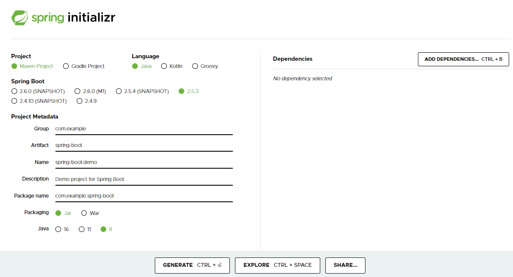
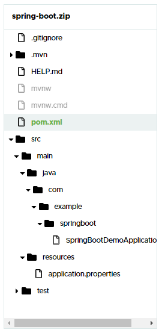

Getting Started with Spring-BootThis Guide helps you for getting started with springboot
What You Will buildYou will build a simple web application with Spring Boot and add some useful dependencies and services to it.
What You NeedAbout 15 minutes
A favorite text editor or IDE
JDK 1.8 or later
Maven 3.2+(used for this guide)
You can also import the code straight into your IDE:
Like most Spring Getting Started guides, you can start from scratch and complete each step or you can bypass basic setup steps that are already familiar to you. Either way, you end up with working code.
Visit spring initializr
Enter Following Deatils:
These are the details prefered for his guide.
MavenJava2.5.3(as per latest stable)com.examplespring-bootspring-boot-demoDemo project for Spring Bootcom.example.spring-bootJar/War16/ 11/ 8Explore
Click on Explore, so that you can see the project structre and all files

pom.xml
<?xml version="1.0" encoding="UTF-8"?>
<project xmlns="http://maven.apache.org/POM/4.0.0" xmlns:xsi="http://www.w3.org/2001/XMLSchema-instance"
xsi:schemaLocation="http://maven.apache.org/POM/4.0.0 https://maven.apache.org/xsd/maven-4.0.0.xsd">
<modelVersion>4.0.0</modelVersion>
<parent>
<groupId>org.springframework.boot</groupId>
<artifactId>spring-boot-starter-parent</artifactId>
<version>2.5.3</version>
<relativePath/> <!-- lookup parent from repository -->
</parent>
<groupId>com.example</groupId>
<artifactId>spring-boot</artifactId>
<version>0.0.1-SNAPSHOT</version>
<name>spring-boot-demo</name>
<description>Demo project for Spring Boot</description>
<properties>
<java.version>1.8</java.version>
</properties>
<dependencies>
<dependency>
<groupId>org.springframework.boot</groupId>
<artifactId>spring-boot-starter</artifactId>
</dependency>
<dependency>
<groupId>org.springframework.boot</groupId>
<artifactId>spring-boot-starter-test</artifactId>
<scope>test</scope>
</dependency>
</dependencies>
<build>
<plugins>
<plugin>
<groupId>org.springframework.boot</groupId>
<artifactId>spring-boot-maven-plugin</artifactId>
</plugin>
</plugins>
</build>
</project>
SpringBootDemoApplication.java
package com.example.springboot;
import org.springframework.boot.SpringApplication;
import org.springframework.boot.autoconfigure.SpringBootApplication;
@SpringBootApplication
public class SpringBootDemoApplication {
public static void main(String[] args) {
SpringApplication.run(SpringBootDemoApplication.class, args);
}
}
Share
Click on Share to share your configuration URL to others
Generate
Click on generate
A Zip file will be downloaded
Exract the Zip file to your workspace
Run Spring Boot ApplicationOpen you IDE
Open/ Import your project
Build project
On successfull build - Run as Spring Boot Application
Click to see project structure